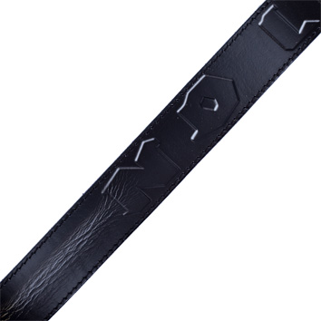

Juodieji diržai – išsipildžiusi čempionų vaikystės svajonė - DELFI Sportas
2020.10.30 04:50
Spalio 30 d., penktadienis | Vilnius 9 Kaunas 7 Klaipėda 11 Šiauliai 7 Panevėžys 9 Alytus 8 Nida 9 Raseiniai 6 Utena 8 Mažeikiai 7 Biržai 9 Kėdainiai 7 Kiti miestai Paieška | Pranešti naujieną | LT RU EN | Reklama Kontaktai | Statistika | + Apie Delfi plius Prisijungti Naujausios Skaitomiausios Lietuvoje Sportas Orai Kriminalai Užsienyje Veidai Horoskopai Gyvenimas Mokslas Verslas Daugiau Sveikata Kultūra Auto M360 Politiko akimis Jaunimas Pilietis Nuomonių ringas Multimedija Teisė Medijos Karas Propaganda PT Melo detektorius Demaskuok Ačiū už pamokas Temos | Delfi Video
Naujienos
Naujausios Skaitomiausios Lietuvoje Sportas Kriminalai Užsienyje Veidai GyvenimasVerslas Mokslas Kultūra Sveikata Auto Pilietis Miestai M360 Politiko akimis
Delfi Video
Tiesioginės transliacijos Delfi Diena Delfi Dėmesio centre LaidosNaudinga
Orai Horoskopai Receptai TV Programa Valiutų kursaiDelfi projektai
Multimedija Idėja Lietuvai Kablys Smalsūs EP Atsakingas požiūris Atgal į gyvenimąDelfi kanalai
Agro Būstas Moterys Šeima Kelionės Grynas Stilius Maistas Letena Karjera Bored Panda Sek DelfiMobilusis Delfi
sportas Krepšinis.lt Futbolas F-1 Tenisas Kitos sporto šakos Auto ir motosportas Sporto pinigai Sportas Kitos sporto šakos
Juodieji diržai – išsipildžiusi čempionų vaikystės svajonė
(5) www.DELFI.lt 2020 m. spalio 23 d. 14:00Nuorodos kopijavimas
Juodieji diržai – išsipildžiusi čempionų vaikystės svajonė
Nuoroda nukopijuota
aA Lietuvos kiokušin karatė meistrai laiką prieš naująjį sezoną, tradiciškai, praleido treniruočių stovyklose, kurias vainikavo egzaminai. Po jų ir vėl gerokai pailgėjo aukštesnio lygmens meistrų sąrašas. Rūta Brazdžionytė © Algimantas BarzdžiusNuo šiol 3 dano meistrais yra Rūta Brazdžionytė („Saulės ženklas“), Gabija Gudeliauskaitė („Rifas“), Aneta Meškauskienė („Takas“), Rima Lisinskaitė („Okinava“), Kristina Basova („Okinava“), Vytautas Cėpla („Saulės ženklas“), Edmundas Gataveckas („Spartanika“) ir Edgardas Sečinskis („Saulės ženklas“).
„Mano filosofijoje diržas žymi laiptelius ilgame karatė ir savęs pažinimo kelyje. Kiekvienas išlaikytas diržas praplečia akiratį, supranti, kad ši kelionė yra be pabaigos, – sakė sportinę karjerą prieš metus baigęs chemijos mokslų daktaras V. Cėpla. – Man 3 danas svarbus, nes karatė sistemoje iš mokinio tapau mokytoju, tai atveria naujas galimybes karatė pažinime. Žinoma, pats 3 dano egzaminas yra puiki proga išbandyti save ir savo motyvaciją, o egzamino metu atlaikyti 50 kovų buvo mano sena svajonė.“
Susiję straipsniai Garsi Baltarusijos plaukikė – apie valdžios grasinimus, „įsakymus laimėti“ ir Meilutytės pasitraukimą (45) Gudzinevičiūtė perrinkta LTOK prezidente trečiai kadencijai (63)„Viskas – savo laiku“, – kolegai pritarė Europos čempionė R. Brazdžionytė.
Sportininkė 2 dano egzaminą laikė dar 2012 metais, o vėliau visą dėmesį skyrė pasirengimui varžybose ir dalyvavimui jose.
„Pati pradėjus treniruoti kitus, supratau, kad sukaupta labai daug patirties ir žinių, ir, kad jau esu pasirengusi tapti mokytoja. Tad ir žengiau šį žingsnį po 22 metų ėjimo karatė keliu“, – teigė sportininkė.
2 dano egzaminą ir 40 kovų testą sėkmingai išlaikė net 22 sportininkai: Erika Žeburtovič („Osu“), Gerda Pekarskaitė („Saulės ženklas“), Vaiva Kairaitytė („Saulės ženklas“), Justina Šišaitė („Stoikas“), Raminta Makackaitė („Tornadas“), Nerijus Gediminas („Fudoshin“), Robertas Petkevičius („Kariai“), Pavelas Eimontas („Sakura“), Julius Klakauskas („Saulės ženklas“), Gytis Garnys („Saulės ženklas“), Jevgenijus Jemecas („Saulės ženklas“), Robertas Bliujus („Spartanika“), Gintaras Cemnalianskis („Taurus“), Mantas Chrapačas („Osu“), Romualdas Auga („Rifas“), Justinas Kvietka („Rifas“), Orestas Abazorius („Saulės ženklas“), Balys Paužolis („Saulės ženklas“), Juras Sokolovas („Saulės ženklas“), Audrius Vaitiekėnas („Shin“), Laurynas Vaičikauskas („Shodan“) ir Airidas Bladaitis („Sostinės karatė mokykla“).
Šiame sąraše išsiskiria 56 metų G. Cemnalianskis, jau 34 metus puoselėjantis karatė tradicijas ir Tauragėje.
„Karatė yra mano gyvenimo būdas ir filosofija, visas pakopas mintyse aš jau esu praėjęs, reikėjo tik padaryti, egzaminas man yra simbolinis žingsnis, – sakė patyręs karatė meistras. – Šie metai yra tokie, kad virusas suteikė galimbę užsiimti pačiu savimi.“
Dar gausesnis būrys sportuojačiųjų džiaugėsi 1 dano egzamino ir 40 kovų testo išlaikymu. Šis žingsnis turi labai didelę simbolinę reikšmę, nes išlaikius egzaminą sportininkas įgyja teisę ryšėti visame pasaulyje puikiai suprantamą simbolį – juodos spalvos diržą.
2020-aisiais 1 dano meistrais tapo ir du jau pripažinti, tituluoti Lietuvos kovotojai – du kartus Europos čempionas Eventas Gužauskas (Žemaitijos regione veikiantis klubas „Shodan“) bei daugkartinis Europos ir pasaulio čempionatų prizininkas Kęstutis Radvila (Kauno „Rifas“).
„Kiekvienas vaikas, pradėjęs lankyti karatė trenirotes, galvoja apie juodą diržą, tai yra kiekvieno svajonė ir pirmas tikslas. Nepamenu visiškai tiksliai, ką tada galvojau, bet apie juodą diržą tikrai esu svajojęs“, – nusišypsojo 25 metų E. Gužauskas.
Vytautas Cėpla © Algimantas Barzdžius„Tikriausiai tai yra kiekvieno pradedančiojo svajonė. Žmonės, išgirdę, kad žmogus turi juodąjį karatė diržą, dažnai labai nustemba“, – pritarė 30-metis K. Radvila.
Vis dėlto abiems sportininkams žengti vaikystėje itin trokšto žingsnio ilgai neleido varžybos. Nuolat dalyvaujant čempionatuose ir laimint daug kovų, vaikystės svajonė nebeatrodė tokia svarbi.
„Aš pats juodo diržo nesureikšmindavau, nes visą dėmesį skyriau varžyboms, dar turėdamas tik geltonąjį Europos jaunimo čempionate kovojau su juodų, rudų diržų savininkais ir tapau čempionu, – pasakojo K. Radvila. – Ilgą laiką (apie 5-6 metus) nelaikiau egzaminų ir buvau su rudu diržų, o iki juodojo man trūko net 2 egzaminų. Visą dėmesį skyriau kovoms. Neplanavau jo laikyti ir šiemet, vis dėlto, sulaukęs paskatinimo, nusprendžiau žengti šį žingsnį.“
„Aš labiau buvau susitelkęs į varžybas, – panašią istoriją išdėste E. Gužauskas. – Buvo keletas egzaminų, kurių ilgai nelaikiau. Tikriausiai todėl, kad vasaros pradžioje ar vėlyvą pavasarį vyksta Europos čempionatai, po jų norėdavosi atsipūsti, o ne važiuoti į stovyklą laikyti egzaminų. Tuomet viskas atrodė taip, dabar – kiek kitaip.“
K. Radvila pasakojo, kad pasirengti egzaminui nebuvo paprasta: „Nuo pasirengimo pradžios iki egzamino nebuvo daug laiko, jau buvo prasidėjusi vasara, tokiu metu vyksta mažiau treniruočių. Buvo nelengva, nes reikėjo daug ką išmokti savarankiškai, kai kuriuos dalykus baigiau šlifuoti tik paskutinę naktį prieš egzaminą.
Vis dėlto egzamino dieną jaučiausi pasitikintis savimi ir galvojau, kad tikriausiai bus dalykų, kurių nemokėsiu labai gerai, bet darysiu viską taip gerai, kaip tik galiu. Egzaminas buvo iš dviejų dalių – technika ir kovos. Po pirmosios dalies iš karto pasidarė lengviau, nes dėl kovų egzamino buvau tikras, kad jį išlaikysiu. Po egzamino buvo nepaprastai smagu! Tik, deja, negalėjau to atšvęsti su draugais, iš karto turėjau išvykti.“
213 PasidalinoNuorodos kopijavimas
Juodieji diržai – išsipildžiusi čempionų vaikystės svajonė
Nuoroda nukopijuota
Griežtai draudžiama DELFI paskelbtą informaciją panaudoti kitose interneto svetainėse, žiniasklaidos priemonėse ar kitur arba platinti mūsų medžiagą kuriuo nors pavidalu be sutikimo, o jei sutikimas gautas, būtina nurodyti DELFI kaip šaltinį. | Populiariausi straipsniai ir video Įvertink šį straipsnį Norėdami tobulėti, suteikiame jums galimybę įvertinti skaitomą DELFI turinį. ( 3 žmonės įvertino) 5.0000 Susiję straipsniai SportasGarsi Baltarusijos plaukikė – apie valdžios grasinimus, „įsakymus laimėti“ ir Meilutytės pasitraukimą laida „Sportinė forma“ (45)
„Mums sakė, kad valstybė investavo į mus pinigus, todėl privalome būti valdžios pusėje. Ne...
SportasGudzinevičiūtė perrinkta LTOK prezidente trečiai kadencijai (63) 184
Nuo 2012 metų Lietuvos tautinio olimpinio komiteto (LTOK) prezidentės pareigas einanti Daina...
Europos čempionate debiutavęs Labanauskas geriausio pasaulio žaidėjo nepalaužė
Ketvirtadienį Vokietijoje prasidėjo Europos smiginio čempionatas, kuriame savo atstovą pirmą...
Olimpinė prizininkė grįžta į didįjį sportą (1)
Rio de Žaneiro olimpinių žaidynių bronzos medalio laimėtoja, pasaulio ir Europos čempionė...
Įveikus koronavirusą – pirmoji lietuviškojo „Motor“ pergalė Čempionų lygoje
Su koronavirusu pastarąsias kelias savaites kovojęs Aideno Malašinsko ir trenerio Gintaro Savukyno...
Greičiausio pasaulio sprinterio alibi dopingo kontrolierių neįtikino – diskvalifikuotas 2 metams (4)
Pasaulio 100 m bėgimo čempionas 24 metų Christianas Colemanas nubaustas 2 metų diskvalifikacine...
Lietuvos rekordininkas: apie olimpinę svajonę, pasitikėjimą savimi ir nestandartinę distanciją (1)
Lietuvos rekordininkas Simas Bertašius rugsėjo 16 dieną baigė vasaros sezoną ir dabar...
Top naujienos
LietuvojeNaujos koalicijos darbus dėliojantys liberalai nori keisti vaiko pinigų skyrimą: ne visoms šeimoms jie reikalingi (2061) 2514
Pasiūlymus būsimos koalicijos programai pateikusios Laisvės partijos pirmininkė Aušrinė...
VerslasĮ sukčių pinkles patekęs vyras prarado 37 tūkst. eurų: skundas Lietuvos bankui nepadėjo (141)
Vienam šalies gyventojui investuotojo karjera susiklostė itin nesėkmingai. 2018 metais jis...
KrepšinisNesulaikomas Grigonis ir prabilęs Lekavičius ištempė „Žalgirį“ į pergalę Prancūzijoje (336) 774
Karjeros rungtynes Eurolygoje žaidęs Marius Grigonis bei jam lemiamu metu sėkmingai talkinęs Lukas...
LietuvojeVėlinių savaitgalio prognozė: šiluma trauksis (4)
Penktadienį iš vakarų praslinks jau paskutinis dažnai šią savaitę mus lankiusių su menkesniu...
LietuvojeTarp kandidatų į Konferencijos dėl ES ateities vadovo postą – Dalia Grybauskaitė (334) 665
Buvusi Lietuvos prezidentė Dalia Grybauskaitė kartu su buvusiais Italijos ir Danijos lyderiais...
LietuvojeBaltarusija uždarė sieną su Lietuva ir kitomis kaimynėmis: nuo 16 val. nebeįleidžiamas lengvasis transportas Linkevičius: oficialios informacijos neturime; papildyta 18:47 (531) 463
Baltarusija ketvirtadienio popietę uždarė sieną su Lietuva , motyvuodama saugumo reikalavimais...
KrepšinisGrigonio lyderystę akcentavęs Schilleris: šioje komandoje daug kas prasideda nuo Mariaus (5)
Prancūzijoje ilgai atsilikinėjęs, tačiau mačo pabaigoje koronaviruso išsekintą Vilerbano ASVEL...
UžsienyjeApie netikėtus pokyčius pranešęs Lukašenka: situaciją reikės išspręsti, tu pats supranti pasirengęs pasiųsti kariuomenę (148)
Ketvirtadienį Aliaksandras Lukašenka netikėtai pakeitė vidaus reikalų ministrą – vietoje...
KrepšinisSužibėjęs, bet savęs girti nenorėjęs Grigonis: 4 pergalė išvykoje iš 4 galimų – labai labai gerai (10)
Kauno „Žalgirio“ komanda Eurolygoje iškovojo penktą pergalę iš šešių galimų – šį...
VeidaiLaima Tamulytė-Stončė su vyru Gediminu susilaukė pirmagimio (75) 701
Renginių vedėja Laima Tamulytė-Stončė , dar žinoma Mama Rock‘n‘Roll vardu, su vyru Gediminu...
| Maža didelių žinių kaina Sekite DELFI REKLAMA KONTAKTAI PRIVATUMAS KARJERA en.delfi.lt ru.delfi.lt pl.delfi.lt delfi.ee rus.delfi.ee delfi.lv ru.delfi.lv UAB DELFI Gynėjų g. 16, 01109 Vilnius +37052045400 info@delfi.lt © 1999-2020 DELFI. Visos teisės saugomos .- Diržai sportui | Apolono papildai
- DIRŽAI - Ginklai medžioklei, savigynai, sportui - Vollit ...
- Diržai moterims - Jai24.LT
- DIRŽAI virš 370 modelių Žema kaina | Varle.lt
- Pasipriešinimo gumos ir diržai
- Diržai internetu | Sportsman.lt
- Diržai Archives - OneDress
- Vyriški diržai - E-galanterija
- Diržai - Survival
- Diržai moterims internetu - Žinomi prekiniai ženklai
- Diržai sportui | Apolono papildai
DIRŽAI . DIRŽAS HUNTER TECH NEO SLING 90CM BERETTA. Įvertinimas: 5.00 iš 5. 29.00 ...
- DIRŽAI - Ginklai medžioklei, savigynai, sportui - Vollit ...
DIRŽAI Antony Morato, Calvin Klein, Emporio Armani... Žemos kainos garantija. NEMOKAMAI atsiimk vienoje iš 16 Varle.lt parduotuvių.
- Diržai moterims - Jai24.LT
Pasipriešinimo gumos ir žiedai – vienos pigiausių sporto priemonių, skirtos norintiems užsiimti aktyvia veikla namie. Be abejonės, šias priemones taip pat rasite ir sporto salėse, pilateso, kalanetikos ir jogos studijose, tačiau norintiems sportuoti namie, nereikės investuoti daug į inventorių, jei pasirinksite pasipriešinimo gumas ir žiedus.
- DIRŽAI virš 370 modelių Žema kaina | Varle.lt
Žinoma, ir šiandien diržai atlieka nemažai praktinių funkcijų, pavyzdžiui, prilaiko drabužius ar sulaiko šilumą. Visgi kur kas dažniau diržai yra stilingi aksesuarai, papildantys aprangą. Mūsų parduotuvėje rasite nedidelį Puma diržų asortimentą. Tai klasikiniai, neutralių spalvų, patogūs ir tvirti diržai. Jie puikiai ...
- Pasipriešinimo gumos ir diržai
Juodieji diržai – išsipildžiusi čempionų vaikystės svajonė www.DELFI.lt. 2020 m. spalio 23 d. 14:00 aA. Lietuvos kiokušin karatė meistrai laiką prieš naująjį sezoną, tradiciškai, praleido ...
- Diržai internetu | Sportsman.lt
Įvairūs diržai sportui leis Jums pasiekti geresnių rezultatų, sportuoti lengviau bei apsaugoti tam tikras kūno dalis. Originalūs Power System diržai juosmeniui skirti kiekvienam jėgos sportininkui, jie apsaugos nugarą ir juosmenį. Šioje kategorijoje taip pat rasite Power System apsaugas riešams, kurios padės išvengti riešo sąnarių traumos.
- Diržai Archives - OneDress
Diržai internetu iš Newmood. Guess, Calvin Klein, Tommy Hilfiger, Diesel ir kitų gamintojų diržai. Greitas prekių pristatymas didžiuosiuose Lietuvos miestuose.
- Vyriški diržai - E-galanterija
Diržai moterims internetu. 4,8/5 įvertinimas (300+ atsiliepimų), galimybė grąžinti/keisti, atsiskaitymas atsiimant!
- Diržai - Survival
Diržai Prekių palyginimas (0) Rūšiuoti pagal: Standartinė Pavadinimas (A - Z) Pavadinimas (Z - A) Kaina (Žema > Aukšta) Kaina (Aukšta > Žema) Įvertinimai (Aukščiausi) Įvertinimai (Žemiausi) Prekės kodas (A - Z) Prekės kodas (Z - A)
- Diržai moterims internetu - Žinomi prekiniai ženklai
Tradiciniai kelnių diržai ne visad yra tinkami pistoleto dėklo nešiojimui. Kasdieniai diržai neturi tokio stabilumo, kokį gali duoti karinis diržas. Tačiau yra kita medalio pusė, juk nesidėsi karinio ..
DIRŽAI . DIRŽAS HUNTER TECH NEO SLING 90CM BERETTA. Įvertinimas: 5.00 iš 5. 29.00 ...
DIRŽAI Antony Morato, Calvin Klein, Emporio Armani... Žemos kainos garantija. NEMOKAMAI atsiimk vienoje iš 16 Varle.lt parduotuvių.
Pasipriešinimo gumos ir žiedai – vienos pigiausių sporto priemonių, skirtos norintiems užsiimti aktyvia veikla namie. Be abejonės, šias priemones taip pat rasite ir sporto salėse, pilateso, kalanetikos ir jogos studijose, tačiau norintiems sportuoti namie, nereikės investuoti daug į inventorių, jei pasirinksite pasipriešinimo gumas ir žiedus.
Žinoma, ir šiandien diržai atlieka nemažai praktinių funkcijų, pavyzdžiui, prilaiko drabužius ar sulaiko šilumą. Visgi kur kas dažniau diržai yra stilingi aksesuarai, papildantys aprangą. Mūsų parduotuvėje rasite nedidelį Puma diržų asortimentą. Tai klasikiniai, neutralių spalvų, patogūs ir tvirti diržai. Jie puikiai ...
Juodieji diržai – išsipildžiusi čempionų vaikystės svajonė www.DELFI.lt. 2020 m. spalio 23 d. 14:00 aA. Lietuvos kiokušin karatė meistrai laiką prieš naująjį sezoną, tradiciškai, praleido ...
Įvairūs diržai sportui leis Jums pasiekti geresnių rezultatų, sportuoti lengviau bei apsaugoti tam tikras kūno dalis. Originalūs Power System diržai juosmeniui skirti kiekvienam jėgos sportininkui, jie apsaugos nugarą ir juosmenį. Šioje kategorijoje taip pat rasite Power System apsaugas riešams, kurios padės išvengti riešo sąnarių traumos.
Diržai internetu iš Newmood. Guess, Calvin Klein, Tommy Hilfiger, Diesel ir kitų gamintojų diržai. Greitas prekių pristatymas didžiuosiuose Lietuvos miestuose.
Diržai moterims internetu. 4,8/5 įvertinimas (300+ atsiliepimų), galimybė grąžinti/keisti, atsiskaitymas atsiimant!
Diržai Prekių palyginimas (0) Rūšiuoti pagal: Standartinė Pavadinimas (A - Z) Pavadinimas (Z - A) Kaina (Žema > Aukšta) Kaina (Aukšta > Žema) Įvertinimai (Aukščiausi) Įvertinimai (Žemiausi) Prekės kodas (A - Z) Prekės kodas (Z - A)
Tradiciniai kelnių diržai ne visad yra tinkami pistoleto dėklo nešiojimui. Kasdieniai diržai neturi tokio stabilumo, kokį gali duoti karinis diržas. Tačiau yra kita medalio pusė, juk nesidėsi karinio ..
